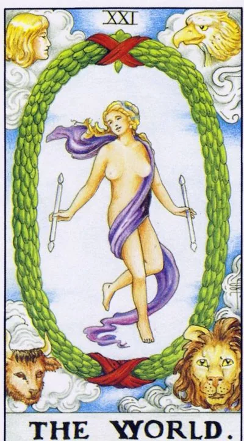

Major Arcana · XXI
XXIThe World
The final chord sounds like the beginning: the cycle is completed, the experience is collected, the dance inside the wreath continues.
Archetype and core meaning
The world is closed by the Major Arcana, a dancing figure in a laurel wreath, and at the corners there are four elements that have passed with you all the way. The magician began with one rod; here there are two, and both are in their hands freely, without effort.
In the layout, the card announces the completion of a big cycle: diploma, house, project, stage of life — the whole thing is done and done. It's not the finish line, it's the exit to orbit: after one is finished, the person sees the next one from a height.
Saturn here is not a rigorous examiner, but a contented builder: the limitations you've been through have turned out to be the framework of the whole. The main gift of the arcana is integrity: the disparate pieces of life are first put together into a pattern.
Daily life
Closed gestalt day: final touch, final cleaning, delivery of a long-bought gift. Finish everything that has hung for months, each closed question adds to the ease. It's good to take stock and plan the next season: the horizon is far away.
Work and career
A major achievement: the project is completed, the goal is taken, the level is officially recognized, the card favors protection, releases, signing long-term contracts and awards, a great moment for going international or long-distance work trip.
Relationships
Relationships are experiencing their "world" -- an anniversary, a wedding, a home, or just a deep sense of "we made it" -- lessons learned are not wasted, they are the foundation of our current intimacy. A single card tells you that the cycle of loneliness is complete, you've come out of it as a person ready for a big thing, you may meet on a journey or with a person from afar.
Health
The body is in harmony: systems work together, recovery from disease is complete, without residual effects. It's a good time to establish healthy habits - they lie in fertile soil. Travel and activity in nature are especially healing. Preventive examinations are carried out calmly: the body has nothing to hide.
Spiritual meaning
The world is the end of the Great Work: the four elements dance around the wreath, and none argues with the others. In practice, the card is used to close magical cycles, thank you rites and initiation to a new level. The wreath is not a cage, but the frame of the picture: the dance continues within the form that protects.
Nearly finished: there is one step left before the end, which for some reason is not done.
Archetype and core meaning
The Upside Down World is a dance that stops a step before the final: diploma unprotected, book nine-tenths completed, move hovering on boxes, almost everything done, and that's what "almost" deprives the reward.
Sometimes the card shows the finale as a formal one: the seal is standing, the inside is empty, the person ran the wrong way, and triumph doesn't smell like triumph, the closing is complete. It hurts more than a simple lapse.
The third sense is the fear of the end of the cycle: it's scary to let the finished thing out into the world, because after that you have to become the one who is already unapologetically "ready," Arcana gently reminds us that a wreath is not a ceiling; behind it begins the sky.
Daily life
The house is full of months of finishing touches: one shelf, one call, one document. Finish something today, ease is guaranteed. See if you're dropping ninety percent for fear of judging the outcome. A little evening ending is the best sleeping pill.
Work and career
Projects are stalled at the finish line: approvals are delayed, the client is delayed, the release is postponed for the fourth time. Check if everything is really ready on your part, sometimes the delay is created by your own perfectionism. Don't cut the last stages "for speed": unsatisfaction will return to a rework. Celebrating early, throwing ridiculously, the finish is closer than it seems.
Relationships
The relationship is almost in a close relationship, almost introducing it to its parents, almost talking about the future, someone pulling the finale out of fear of responsibility or loss of freedom, and another story is possible: the form of life together has developed, but there is no dance in it.
Health
Treatment is abandoned at the last stage: "better, why next," and the disease goes around. Rehabilitation requires a full course, not half: untreated stories accumulate with interest. Listen to the general feeling of "life passes by" - bodily lethargy often reflects unclosed life cycles. Finish it: the body will thank the energy.
Spiritual meaning
An inverted arcana indicates an unclosed initiation: learning is interrupted, rite is not completed, and power is not built into life. The practice is many, and there is no integrity - knowledge lies piled up, not gathering into a pattern. Go back and finish: a completed ritual, a completed book, a duty given to tradition.
🌿 In brief
The main idea
Peace is the completeness and completeness of a situation. But ending here doesn't mean stopping at all. The world and the Fool are connected as the beginning and end of the same spiral.
How it manifests
Closing the project, ending the relationship in its former capacity, completing the financial cycle, paying back the debt, completing the training.
Work.
The project is finished — how it turned out, how it turned out. Now the next one begins.
Finance.
Debt paid, deposit worked, money returned, loan closed.
In a relationship
Relationships reach a full-fledged form and move to a new level – or fully end.
The shadow side
Things are logical, but the result may not be liked.
Feature of the school
The world is the last point of the spiral, and the Fool is the beginning of the next one, and the end of one cycle is the beginning of the next. The main message of the card is, "This stage is complete. Now we can move on."
📜 In detail — lecture extracts
Essence of the card
He takes the world with a lecture with the Jester: both "do not fit" into his system of astrological correspondences - in the 12th house of the struggle of Jupiter and Neptune, the third card is not to be shoved into the third card, the Joke is superfluous in Aries. The core is "the sense of completeness of the situation": the spiral round is over, gives the way to the next level. The joke and the world - "alpha and omega", the beginning and end of the same spring, "ess in essence the same."
Upright position
- The meanings are traditionally arranged in four elements; from the physical - only "general well-being."
- - General series: the end of the cycle - annual, quarterly, financial report, project completion; "nothing can be added"; understanding the form and essence of the phenomenon; objectivity (as opposed to the subjective specificity of Virgo); acceptance of the team as it is - "understood, entered or got involved"; pacification; travel, expanding horizons and markets; often falls on the Internet - "the ideal platform for feeling fullness."
- Work: the product is produced "as is, so is", albeit with errors - the cycle is closed, the next project is waiting.
- Finance: the contribution worked - you can withdraw interest; money returned, the debt was given; go to zero, all over - profit and a new turnover; exemption from debts and payments, fully paid mortgage; growth limit - "how much worked, so earned"; on the question from the chat allows reading the wreath as the end of life.
- Self-development: self-esteem through involvement is part of the process, “not above or below” the world; inspiration to create or the desire to dissolve; the wheel of samsara – souls come to “breathe life fully”, the Zen learner chooses a new role of play or leaving higher.
- Relationships: the final relationship is “logical, full-fledged, full-fledged”, leading to continuation in a new quality; the candy-bouquet period is harmonized, there is nothing to add → registry office, joint life, child, divorce or relocation, if it is close; each new round of relations starts with this card.
Negative meaning
There is no separate block, the formula is straight: “it will take on all the same meanings only in the negative aspect.” Understanding the form and essence of events remains, but “it will hardly be liked”: “the understanding of this will not become less, but may not be so pleasant.” The specifics of the lecture: the Internet with the surveillance of the algorithms of Facebook and Google — information about you is available to everyone; the journey you will have to experience; the actions have a logical result, but harmony — “against you” along the way throws away the everyday move “the world is round, however you turn it”: you change your point of view — it considers superficial.
School emphases and distinctive points
- - Astro-logic system: senior arcana entirely on the wheels of houses are not placed, the younger and at all "tended on the globe" - systematizes only 22; refers to Yuri Khan (the court cards of that go on the last houses).
- - Spiral, not a ring: spring, winding, spiral staircase - step-arcano immediately end of the span, the floor and the start of the next; "the season of the series is over - pull up the first series of the next."
- Kabbalistic framework: the combination of the first and last letters (alef-tav) gives the truth; Christ – “alpha and omega”; the deck collapses into one point.
- Two readings of evolution: either the World – a joker who has grown to the highest wisdom, or Crowley’s version – the soul is born closest to God and all life separates to reject the material, “to be crowned with a joke” (in school this version is considered “rough”).
- - The interpretation of the character according to Waite: the figure is not Truth (the whole one is naked on the Star), but the soul / consciousness in harmony; “the real truth always leaves a shade of unknowability”; the state of grace, illumination, insight, enlightenment of the Buddha.
- The purple scarf is the color of the highest incomprehensible truths: the upper limit of the rainbow, the duckweed of kings and popes, the most expensive pigment.
- A tetramorph without books (there were books in the Wheel of Fortune): there was nothing to write down - don Juan laughed at the writing Carlitos; the students the same thing: understand the meaning of the card.
- The wreath of leaves = uroboros: the eternal snake bites its tail, cycles of creation and destruction; the analogue is the swastika (movement in a circle); Saturn with a sickle and a ring; according to Jung, the archetype carries “darkness and self-destruction”, Neumann is the early stage of personality development; Thor never defeated the world snake.
- - New Year: Saturnalia → Sol Invictus → Christmas; Santa = the symbolism of the time of Saturn; Santa remembers not only gifts, but also punishments (Morozko: "Whether it is warm for you, maid"), weak cattle were cut in winter - "sad fairy tale" of the cycle of the year; Soviet postcard with a change of years: Peace - the end of the year, Jester - the beginning.
- Two sticks against one in the Magician - his hypothesis: the cross of material life (Jesus nailed to matter), gluing of duality yin-yang; the caveat: "These are my theories."
- Zen and humility are the eastern and western forms of the same fullness: enso-ring, emptiness = fullness containing the universe, the garden of stones; “he who understands life, does not laugh in the circus”; Eckhart Tolle about the moment “now”; humility – “to be equal to the whole world” (Mowgli), the cat climbs to stroke during meditation – a true Zen Buddhist strokes and prays; children on the lap’s lap are received with humility.
- - Cinema: "The Hobbit, or There and Back Again" - a ring composition of great works, Bilbo returns the same, but revealed; "Mad Max: Fury Road" - a hero with a heroine as a spirit and body, paradise is found in himself; "Jupiter Ascension" - "matrix for girls" Wachowski sisters: battered toilets Mila Kunis inherits the universe, remaining to live in the family; "Groundhog Day" - the most chic movie of this card, the path of humility through a looped day; "Peaceful warrior" - Juan - a mechanician.
- Banzkhaf does not quote at all; he rejects numerology ("I am not a numerologist", 21→3 he breeds through the third house and the triplet); the dance of the figure simplifies: not the goddess of dance, just "joyful".
Keywords
- completeness · completion of the turn · reaching a new level · “as is, so is” · harmony rather than truth · peace · humility · objectivity · finality opening a new cycle · alpha and omega
- ---